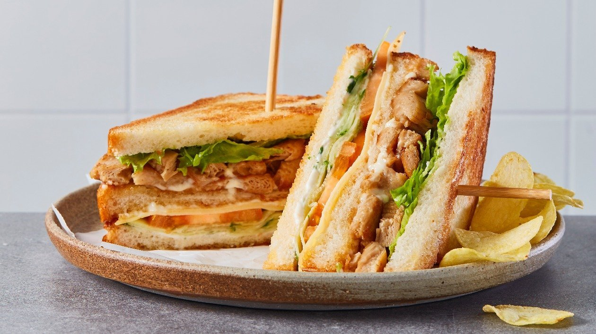
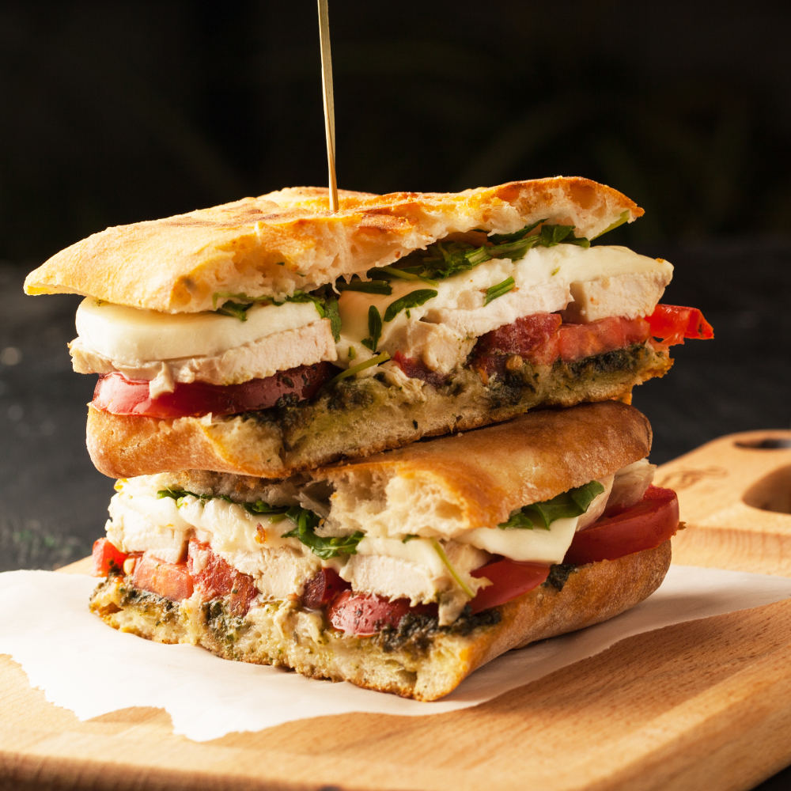
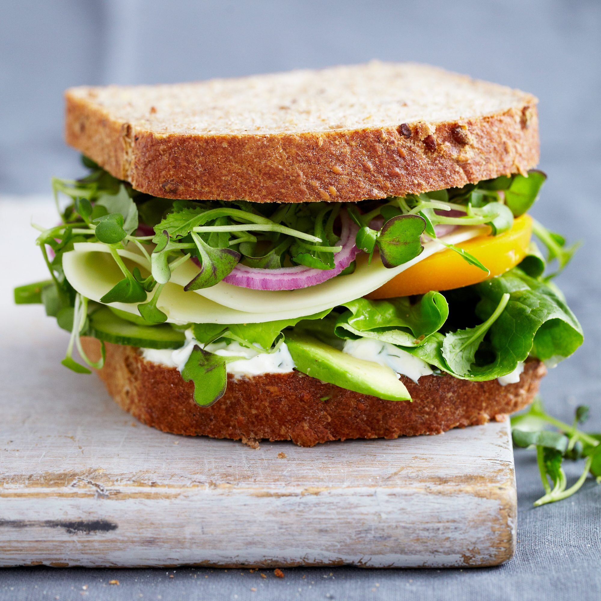
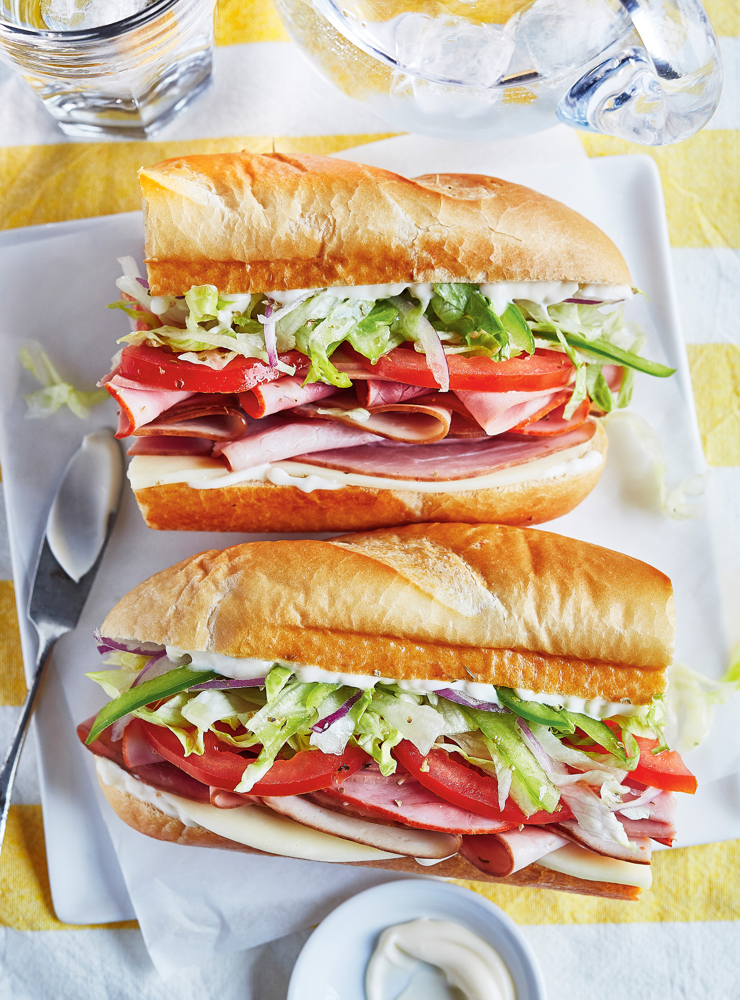

Carbohydrates, as noted by the expert, can be obtained from bread, and it is desirable to choose products from whole grain flour. A source of protein in a sandwich can be boiled meat, lightly salted fish, cheese or caviar. Khachirova advises against eating sausage because it, like sausages, belongs to the products of deep processing.
"According to healthy eating standards, such products should make up no more than one percent of your entire diet. Often consuming sausage sandwiches, you give yourself extra pounds and a high risk of metabolic disorders," the specialist said.
Traditionally, butter is considered a source of fat in a sandwich, but it can be replaced by a less fatty alternative in the form of cottage cheese and slices of avocado.
To make the sandwich more healthy and full of fiber, she advised adding vegetables to it: lettuce, slices of cucumber or tomato, baked zucchini, eggplant or bell peppers. She concluded that a sandwich made according to her recipe, if used in moderation, will not spoil the figure and will energize.
○RECIPE

○In a non-stick pan add oil and saute
○Toast the bread and spread with HELLMANN’s vegan mayo.
○On the bottom layer add (picked and washed) romaine lettuce, cucumber ribbons, slices of orange tomatoes and slices of gouda.
○On the top layer add the warm ‘Vegetarian Butcher’ Nochicken chunks and NoBacon smoked lardons and more lettuce.
○Cut the ‘Club Sandwich’ diagonally and secure with wooden skewers.
Serve with potato crisps.

○In a bowl, mix all the ingredients for chicken and marinate the chicken for about 20-25 minutes.
○In a large frying pan, heat oil over medium flame and add the chicken. Cook well on both sides and drain off excess oil.
○In a bowl, add onions and salt. Mix well and set aside for 10-15 minutes. Drain and rinse the onions and add the rest of the salad ingredients. Mix well.
○Spread the cream cheese on all the bread slices and then top with sweet chilli sauce. Top two bread slices with a chicken fillet and half of the onion salad.
○Close the sandwich with the remaining two bread slices.
Serve immediately with ketchup, fries and chips.

○In a small bowl, stir together the yogurt, dill, mustard, oil, vinegar, 1/4 teaspoon salt, and 1/8 teaspoon pepper.
○Spread a tablespoon of the dill sauce on one side of each of four slices of bread. Top each slice with lettuce, provolone, tomatoes, a sprinkling of salt and pepper, the cucumber, onion, avocado, and sprouts. Drizzle another tablespoon of dill sauce over each sandwich.
○Cover with the remaining four slices of bread

○On a work surface, cut the buns in half horizontally without cutting all the way through.
○Spread the inside of the buns with the mayonnaise.
○Add the cheese, followed by the cold cuts, tomatoes, lettuce, green pepper and onion. Season with salt and pepper.
○In a small bowl, whisk together the oil, vinegar and oregano. Drizzle the vinaigrette over the vegetables and close the submarines.
○The foundation of a good sub is a roll that’s easy on the teeth but has enough crust to hold cold cuts, cheese and veggies without getting soggy. Best not to use a baguette, you’ll destroy your masterpiece just trying to tear into it!
•Would you believe that Americans eat more than 300 million sandwiches a day? That’s right, every day we consume about as many sandwiches as we have people to eat them. And why not? The sandwich might be the perfect food: portable, open to any interpretation and as simple or as elaborate as the mood permits. The sandwich has a long history, but it hasn’t always been as embraced in America as it is now. It’s hard to imagine, but the sandwich was once thought of as a symbol of a colonial past that most patriotic Americans wanted to forget.
•The sandwich as we know it was popularized in England in 1762 by John Montagu, the 4th Earl of Sandwich. Legend has it, and most food historians agree, that Montagu had a substantial gambling problem that led him to spend hours on end at the card table. During a particularly long binge, he asked the house cook to bring him something he could eat without getting up from his seat, and the sandwich was born. Montagu enjoyed his meat and bread so much that he ate it constantly, and as the concoction grew popular in London society circles it also took on the Earl’s name.
•Of course, John Montagu (or rather, his nameless cook) was hardly the first person to think of putting fillings between slices of bread. In fact, we know exactly where Montagu first got the idea for his creation. Montagu traveled abroad to the Mediterranean, where Turkish and Greek mezze platters were served. Dips, cheeses, and meats were all “sandwiched” between and on layers of bread. In all likelihood Montagu took inspiration from these when he sat at that card table.
•Why would this creation go unsung in the nation for so long? It seems early American cooks tended to avoid culinary trends from their former ruling state. And the name “sandwich” itself comes from the British peerage system, something that most Americans wanted to forget. Once memory faded and the sandwich appeared, the most popular version wasn’t ham or turkey, but tongue!
○Interesting places related to sandwiches.
•Tour Sandwich, one of the best preserved medieval towns in the UK
•Best of all -
Try a Guided Tour of Sandwich by The Sandwich Local History Society
•The Guildhall as well as housing a museum the Guildhall itself, with it's ancient courtroom, is well worth a visit
•St. Peter's Church: Discover St. Peter's Church Tower Tours
Climb to the top of the tower for magnificent roof top views of Sandwich